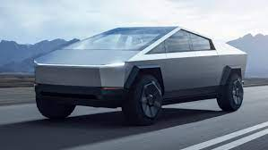

Tesla Cybertruck
The Tesla Cybertruck is a battery electric pickup truck built by Tesla, Inc. since 2023. Introduced as a concept vehicle in November 2019, it has a body design reminiscent of low-polygon modelling, consisting of flat stainless steel sheet panels. Tesla initially planned to produce the vehicle in late 2021, but after many delays, it entered production in mid 2023 and was first delivered to customers in November. Three models are offered: a tri-motor all-wheel drive (AWD) model called Cyberbeast, a dual-motor AWD model, and a rear-wheel drive (RWD) model. EPA range estimates cover 250–340 miles (400–550 km), varying by model. As of December 2023, the Cybertruck is available only in North America.